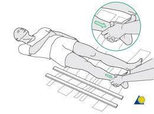
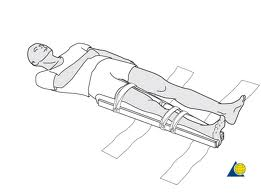
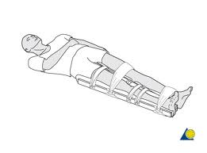
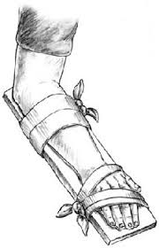

Broken Bone
Treatment
Keep victim warm and still, treat for shock if necessary.
DO NOT move victim until a splint has been applied unless there is danger of a life-threatening emergency




If bone is suspected to be broken but does not pierce the skin (closed fracture):
Splint the limb before the victim is moved, immobilizing the joint above and below the suspected fracture site.
If broken bone pierces the skin (open or compound fracture):
- Apply pressure to appropriate pressure point to control bleeding. DO NOT try to straighten limb
- Return it to a natural position, or replace bone fragments. DO NOT touch or clean the wound.
- Secure a sterile pad or clean cloth firmly in place over the wound and tie with strong bandages or cloth strips
If victim must be moved:
- Apply a splint to prevent further damage
- Use anything that will keep the broken bones from moving, including broomsticks, boards etc.
- Pad splints with cotton, clothes or clean cloths tied firmly (but not tightly) in place
- If victim complains of numbness, loosen splint.
Get medical help immediately.